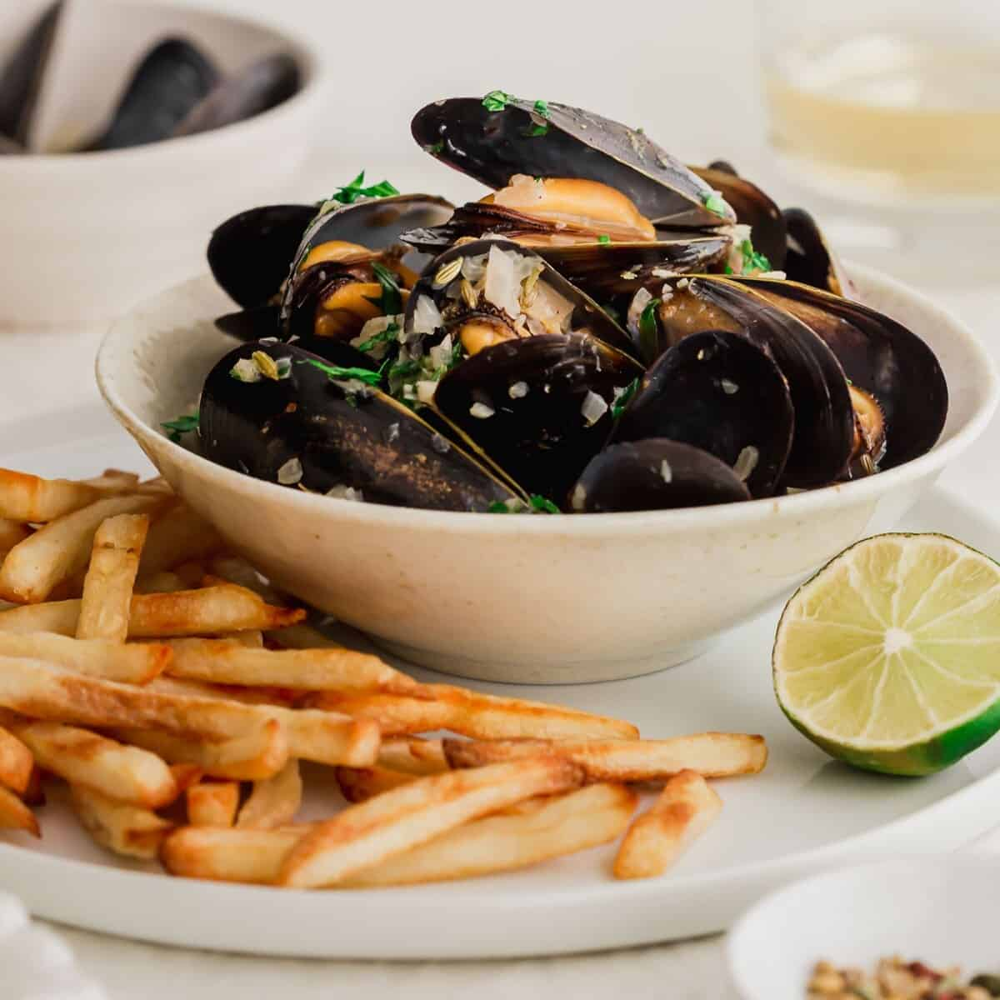
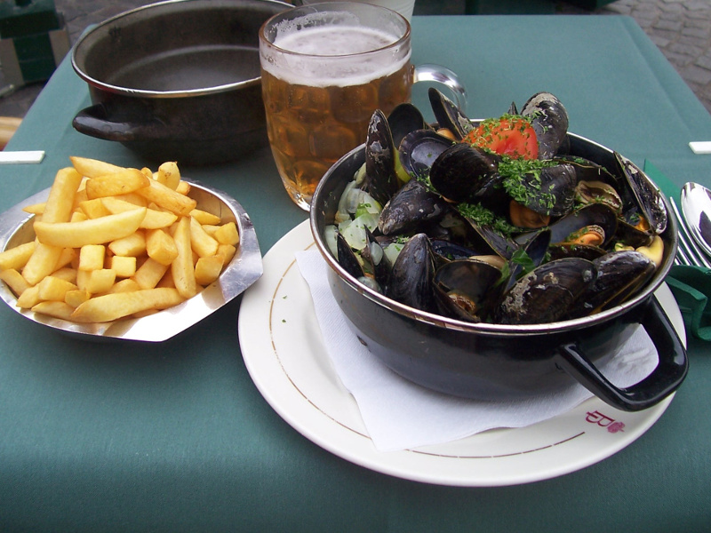
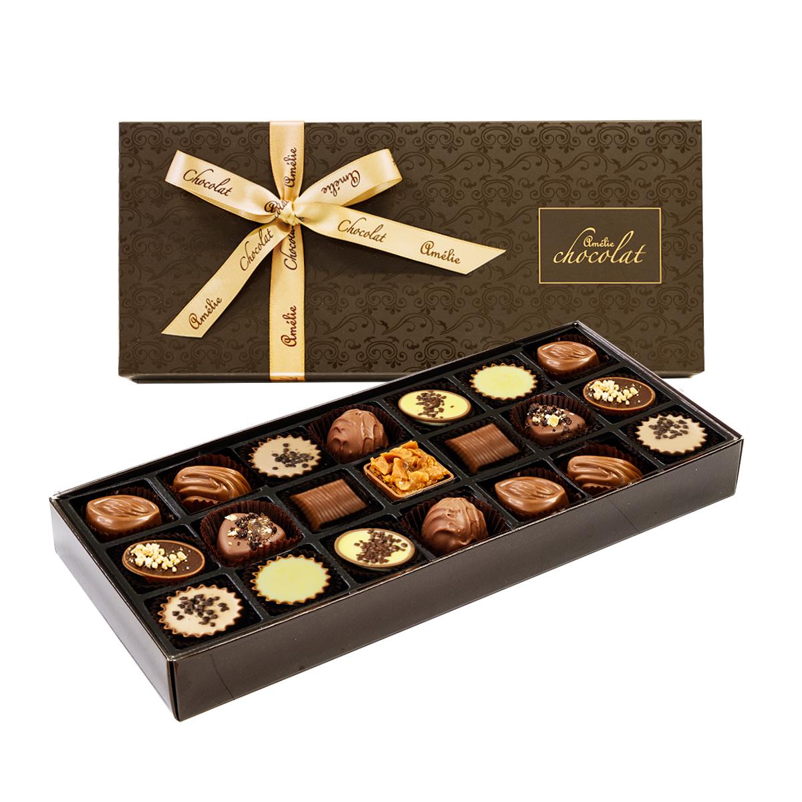
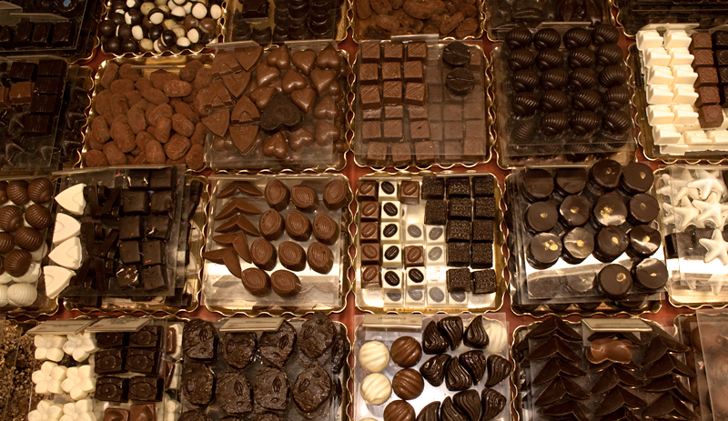
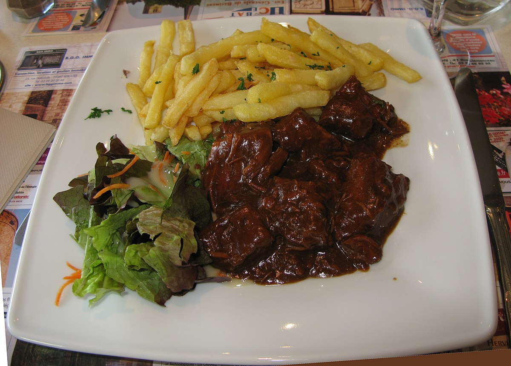
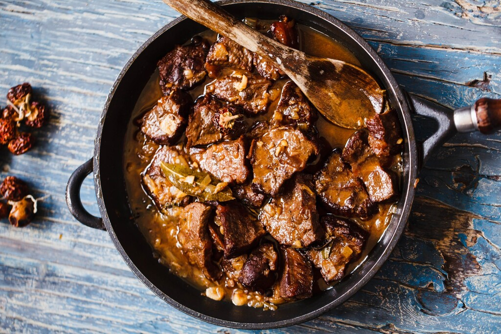
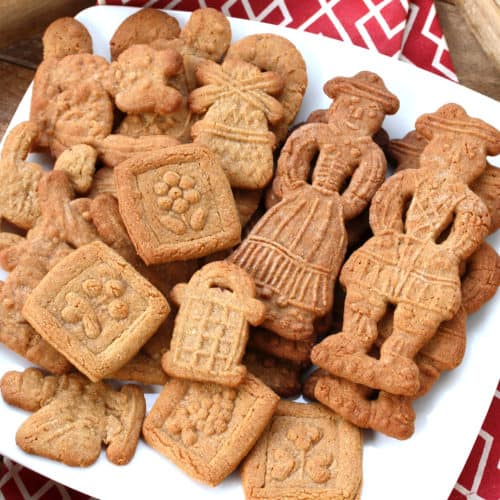
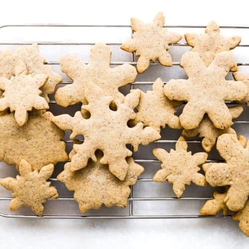
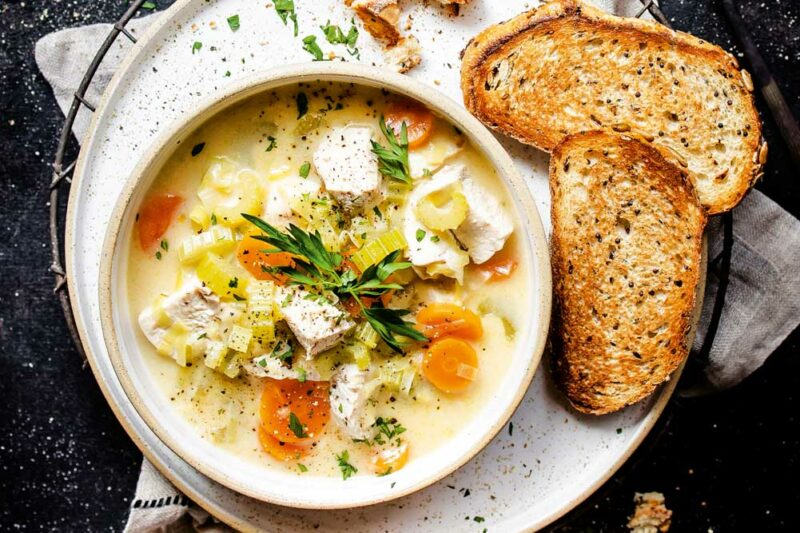
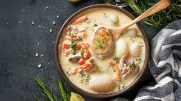

Belgian waffles aren’t just a breakfast treat — they’re basically the golden crown jewels of Belgium’s sweet scene. Crispy on the
outside, light and fluffy on the inside, they’re the kind of comfort food that makes any morning feel like a celebration. Each waffle
is crafted with care, giving it that perfect grid pattern to hold syrup, chocolate, or fresh fruit. You’ll find them at street stalls,
cafés, and markets across Belgium, often topped with whipped cream, berries, or a dusting of powdered sugar. Simple, indulgent, and
undeniably iconic, Belgian waffles show how Belgium turns even a humble batter into an art form — one bite, and you’ll totally get why
they’re world-famous.
Moules-frites


Moules-frites are basically the ultimate Belgian comfort combo. Tender mussels cooked in a flavorful broth — sometimes with white wine,
garlic, or herbs — paired with perfectly crispy golden fries, it’s a dish that’s both simple and insanely satisfying. You’ll see it
served in brasseries and seafood restaurants across Belgium, often with a side of mayonnaise for dipping those fries. The beauty of
moules-frites is in the balance: delicate seafood flavors meet hearty, crunchy fries, creating a meal that’s casual, traditional, and
totally unforgettable. Eating it feels like a little taste of Belgium’s coastal charm no matter where you are.
Belgian Chocolate Pralines


Belgian chocolate pralines aren’t just sweets — they’re little masterpieces of flavor and craftsmanship. Each one is carefully
hand-filled with rich ganaches, creams, or liqueurs, then coated in smooth, glossy chocolate. You’ll find them in elegant chocolate
shops across Belgium, often presented in beautiful boxes that feel like a gift even before you open them. The magic is in the contrast:
silky, decadent fillings inside a crisp chocolate shell. Eating a praline is an experience — indulgent, precise, and undeniably Belgian.
It’s the kind of treat that turns chocolate into an art form, and honestly, it’s a must-try for any visitor in Belgium.
Stoofvlees / Carbonnade flamande


Stoofvlees, also known as Carbonnade flamande, is the cozy, hearty soul of Belgian cuisine. This rich beef stew is slow-cooked in
Belgian beer, giving it a deep, malty sweetness that perfectly balances the savory tender meat. Aromatic herbs, onions, and a touch
of mustard or brown sugar elevate the flavors, creating a dish that feels both rustic and indulgent. Traditionally served with fries
or mashed potatoes, every bite is warming, comforting, and utterly satisfying. It’s the kind of meal that tells a story of Belgian
tradition and hospitality — simple ingredients, masterfully prepared, and impossible to forget.
Speculoos


Speculoos is the crunchy, spiced cookie that feels like autumn in every bite. With its caramelized sugar, warm cinnamon, nutmeg, and
cloves, it’s a Belgian classic that pairs perfectly with coffee or hot chocolate. Traditionally baked around the holidays, these thin,
crisp biscuits have a delicate snap and a rich, fragrant flavor that lingers long after the last bite. Beyond just a treat, Speculoos
represents Belgian craftsmanship and cozy, comforting traditions — simple ingredients, expertly spiced, and absolutely irresistible.
Waterzooi


Waterzooi is the hearty, comforting stew that warms both body and soul. Traditionally from Ghent, it’s made with tender chicken or fish,
fresh vegetables, and a creamy, flavorful broth enriched with eggs and cream. Every spoonful is rich yet balanced, carrying the essence
of Belgian home-cooked meals. Served steaming hot, often with crusty bread on the side, Waterzooi is more than just a dish — it’s a
taste of Belgian tradition, a cozy culinary hug that has stood the test of time.